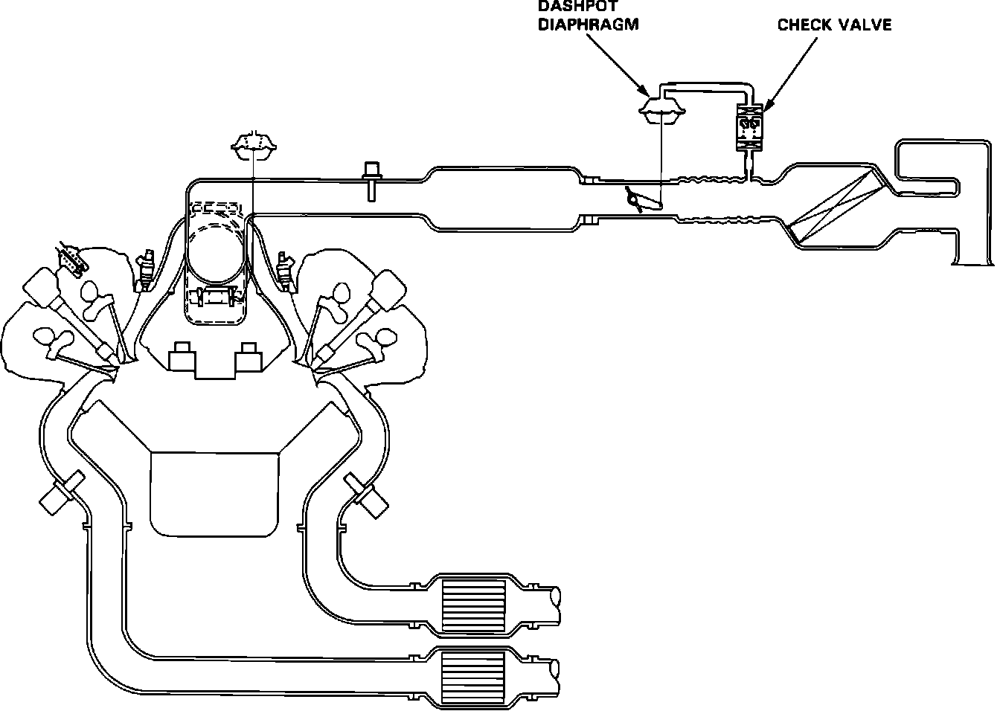

Dashpot: Description and Operation
Dashpot System:

The dashpot slows throttle plate closing during deceleration and gear shifting to reduce emissions. It is attached to the front of the throttle body. The dashpot contains a diaphragm which is controlled by a vacuum check valve. As the throttle is released, the vacuum valve slowly bleeds vacuum from the diaphragm, allowing the dashpot to close the throttle plate at a controlled rate.